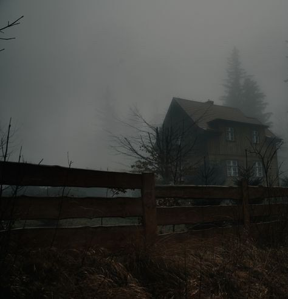
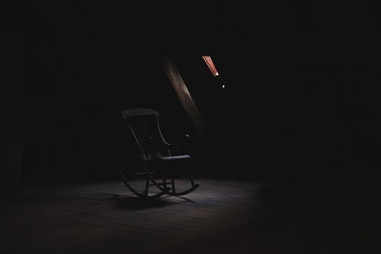
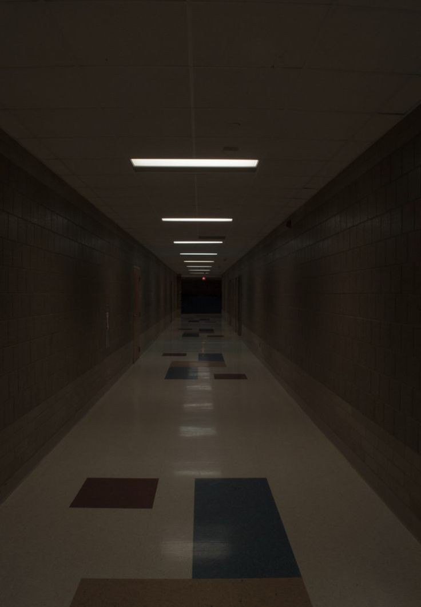
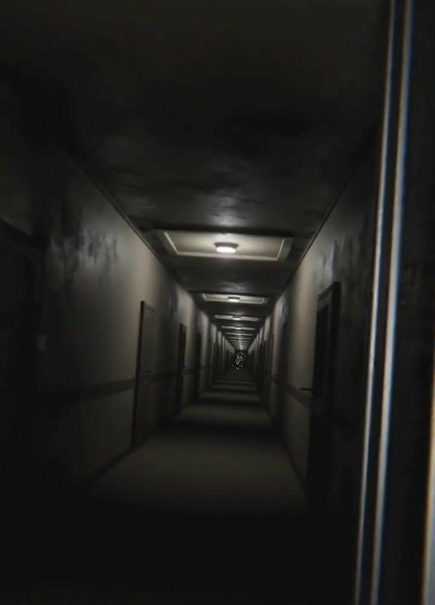

Capítulo-1

Junto com meu pai e meu irmão de 12, nós acabamos indo para casa dos meus avós que ficar próximo há cidade de Hanaka! Onde nós moramos, meu pai recebeu uma ligação urgente más não sei qual foi motivo, no mesmo instante ele apenas nos levou sem dizer uma única palavra.
Porem nós não podíamos ficar em casa pois a mamãe teve que viajar há negócios, ele sem ser que ligou para ela avisando que iria sair, eu achei estranho nunca vi o papai assim?
Depois de 1 hora de viagem e chegando no local, tinha mais dois homens estranhos esperando meu pai, e logo mandaram eu entrar junto com meu irmão, e avisou que não podíamos sair ou muito menos chegar perto do porão, que fica do lado de fora da casa dos meus avós.
Capítulo-2

Ao entra minha avó estava na cadeira de balanço, assistindo ao programa de comédia favorito e percebi que canto nenhum da casa não vi o meu avô, perguntei para ela onde ele estava, mas ela nem se quer respondeu, logo meu irmão foi imediatamente pulado nos braços dela, ela se assustou e mandou nós sairmos da sala, logo percebi que ela estava chorando em lágrimas e assutada com algo terrível, então resolvi não pergunta nada.
O meu irmão ficou um pouco com medo pela reação dela, pois ela não era assim! O porquê estaria fazendo isso? então resolvi não fala nada, eu realmente percebi que tinha algo de estranho.
Meu irmão estava para baixo, (desanimado) depois disso tudo, e tive a ideia de preparar algo para comermos, como eu tinha 16 anos já sabia mim vira sozinha na cozinha com técnica da minha mãe, e mandei meu irmão esperar sentado na cadeira da sala de está.
Preparei panqueca! Mas levando para mesa da sala percebi que o meu irmão não estava mais lá onde eu mandei ele esperar.
Procurei ele em toda parte da casa, no anda de cima vi pela janela ele brincando fora de casa, resolvi descer para chama ele! Para comer antes que esfrie as panquecas, e também lembrei sobre o aviso de meu pai e fui rápida o chama.
Capítulo-3

Passei pela minha avó e olhei seu rosto, ela não estava nada bem, mas resolvi não olha muito para ela.
Indo para fora, atrás da casa, vejo o meu irmão de frente olhando para porta do porão! Eu o chamei más ele não ouvia os meus chamados, mesmo daquela distância.
Então resolvi ir até ele, porém eu ouvi ele falando com alguém e fiquei assustada e imediatamente corri para pega ele, por um segundo eu parei de corre e vir algo segurando em seu braço, era um braço todo queimado, parecia muito o braço de meu avó longo, e ele puxou para dentro com tudo, eu fiquei assustada e corri imediatamente até a porta do porão.
Foi então que ele gritou alto como se tivesse sentido uma dor profunda. Foi como se ele tivesse sido esfaqueado ou algo assim, foi um grito que arrepiou minha pele. segurei o cabo da porta e tentei a abrir, mas eu não consiga ela estava bastante pesada como ferro, realmente figuei sem entender nada, pois não teria como fechar essa porta por dentro. logo aos pouco, meus braços começaram a ficar fracos como se isso tivesse puxando todos minha força, enquanto isso meu irmão ainda estava lá há grita, pedindo minha ajudar.
Capítulo-4

Eu entrei em Pânico não sabia o que fazer. estava a acontecer algo com o meu irmão e eu tinha que chegar até ele, mais de repente meu irmão parou de gritar. Tentei novamente abri a porta até que metade do corpo de meu irmão saiu para fora, ele estava chorando e cheios de machucados, o seu olho esquerdo tinha sido perfurado! Logo vi a mão longa se estender em sua direção vindo do porão, e agarra no ombro do meu irmão. O toque era frio e muito forte. O seu ombro começo a doer e ele implorava por ajuda! Más eu estava com medo e não consegui fazer nada, foi aí que ele foi puxando novamente para baixo, estava tudo em silêncio não ouvia mais a voz do meu irmão.
De tanto medo, eu me afastei do local e esbarrei em algo atrás de mim, era meu pai com raiva em seu rosto, como se estivesse decepcionado, e seus dentes sangrando. Ele e os dois homens entram lá dentro sem dizer nada e logo, começo a ouvir vozes e gritos do meu avô e dos dois caras, depois de um tempo vi o meu pai saindo de lá sozinho com a sua mão esquerda toda decepada, bastante ensanguentado e a suas roupas todas rasgadas, logo perguntei há ele sobre o meu irmão... Más nada ele nem respondeu minha pergunta, foi então que ele veio direto em minha direção! E com a sua outra mão pegou em minha testa e logo em seguida eu apaguei.
Hoje eu tenho 28 anos e sou filha única dos meus pais mas mesmo assim sinto falta de alguém, uma pessoa que era parte da família, mas eu era filha única não podia estar sentindo isso em meu coração, pois até no sistema fala que sou filha única dos meus pais, más mesmo assim tento encontrar essa tal pessoa que sinto falta em minha vida.
Contato